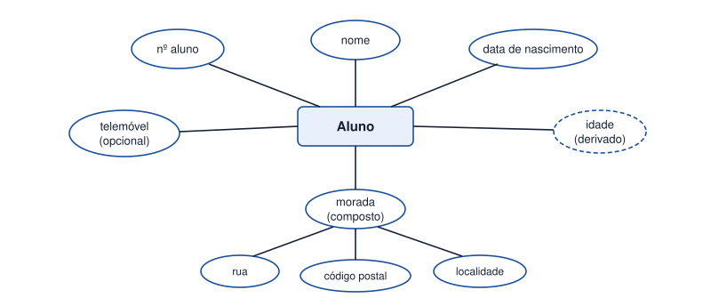

Tema 9 · Modelação de dados
Entidades e tipos de atributos
Atributos simples, compostos, obrigatórios, opcionais e derivados
Uma entidade só fica bem definida quando conhecemos todos os seus atributos e as regras de cada um. Nem todos os atributos são iguais.

| Tipo | Significado | Exemplo |
|---|---|---|
| Simples | Não se divide em partes com significado próprio. | nome, preço |
| Composto | Pode ser dividido em partes mais pequenas. | morada (rua, código postal, localidade) |
| Obrigatório | Tem de ter sempre valor. | nº de aluno, nome |
| Opcional | Pode não ter valor. | telemóvel, segundo nome |
| Derivado | Calcula-se a partir de outro atributo; normalmente não se guarda. | idade (a partir da data de nascimento) |
| Identificador | Distingue cada ocorrência da entidade. | nº de leitor, ISBN |
Guardar a idade obrigaria a atualizá-la todos os dias; guardar a data de nascimento permite calcular a idade sempre que for precisa. É por isso que os atributos derivados normalmente ficam de fora do modelo físico.
Descrição de uma entidade
O analista documenta cada entidade numa tabela com o nome do atributo, o tipo, se é obrigatório, a sua classificação e uma breve descrição.
| Entidade: Aluno | ||||
|---|---|---|---|---|
| Atributo | Tipo de dados | Obrigatório | Classificação | Descrição |
| nºAluno | Inteiro | Sim | Simples, identificador | Número único atribuído na matrícula |
| nome | Texto (80) | Sim | Simples | Nome completo |
| telemóvel | Texto (9) | Não | Simples | Contacto do aluno ou do encarregado |
Atividade
Construir a descrição das entidades do projeto
Construa a descrição das entidades do projeto da biblioteca: Leitor, Livro e Empréstimo. Em cada tabela, indique tipo de dados, se o atributo é obrigatório, a sua classificação (simples, composto ou derivado) e uma descrição. Identifique pelo menos um atributo opcional e um derivado.
Ver proposta de resolução
| Entidade: Leitor | ||||
|---|---|---|---|---|
| Atributo | Tipo | Obrig. | Classificação | Descrição |
| nºLeitor | Inteiro | Sim | Simples, identificador | Número do cartão de leitor |
| nome | Texto (80) | Sim | Simples | Nome completo |
| dataNascimento | Data | Sim | Simples | Data de nascimento |
| idade | — | — | Derivado | Calculada a partir da data de nascimento |
| morada | — | Não | Composto | Rua, código postal e localidade |
| telemóvel | Texto (9) | Não | Simples | Opcional |
| dataInscrição | Data | Sim | Simples | Data de adesão à biblioteca |
| Entidade: Livro | ||||
|---|---|---|---|---|
| Atributo | Tipo | Obrig. | Classificação | Descrição |
| ISBN | Texto (13) | Sim | Simples, identificador | Código internacional do livro |
| título | Texto (150) | Sim | Simples | Título da obra |
| editora | Texto (60) | Sim | Simples | Editora |
| anoEdição | Inteiro | Não | Simples | Ano da edição |
| Entidade: Empréstimo | ||||
|---|---|---|---|---|
| Atributo | Tipo | Obrig. | Classificação | Descrição |
| nºEmpréstimo | Inteiro | Sim | Simples, identificador | Número sequencial |
| dataEmpréstimo | Data | Sim | Simples | Dia em que o livro sai |
| dataPrevistaDevolução | Data | Sim | Simples | Dia limite para devolver |
| dataDevolução | Data | Não | Simples | Preenchida só quando o livro é devolvido |
| diasAtraso | — | — | Derivado | Diferença entre devolução e data prevista |
Em resumo
- Os atributos podem ser simples ou compostos, obrigatórios ou opcionais, e derivados.
- Os atributos derivados calculam-se a partir de outros e normalmente não se guardam.
- Cada entidade tem um atributo identificador.
- A descrição das entidades documenta o tipo, a obrigatoriedade e o significado de cada atributo.